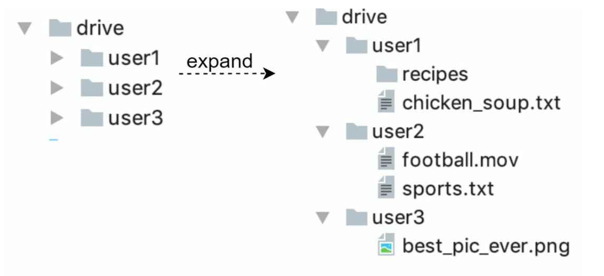
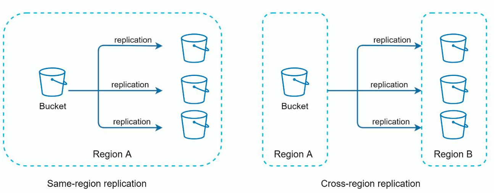
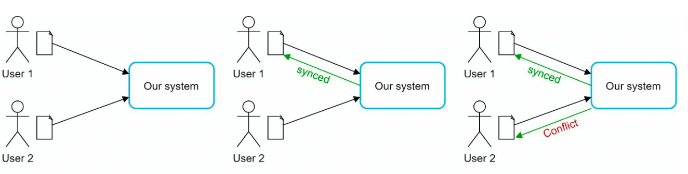
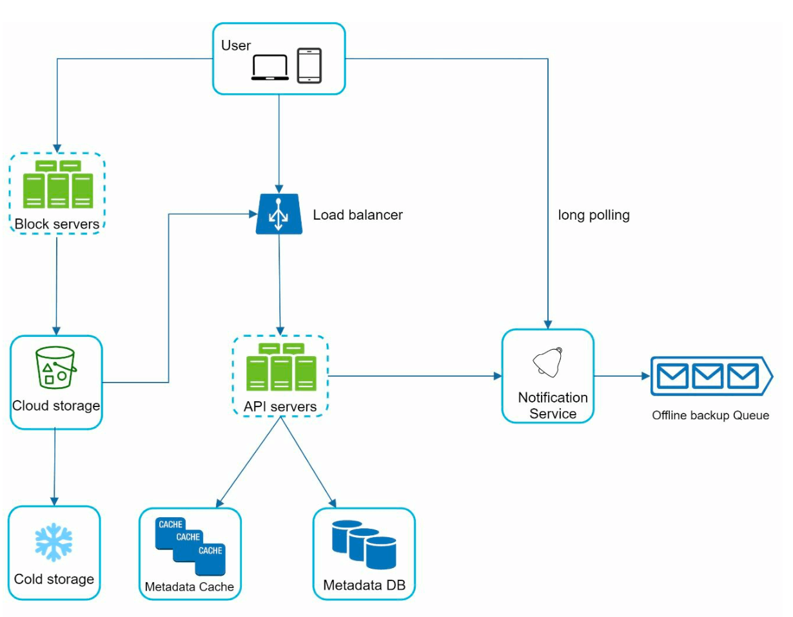
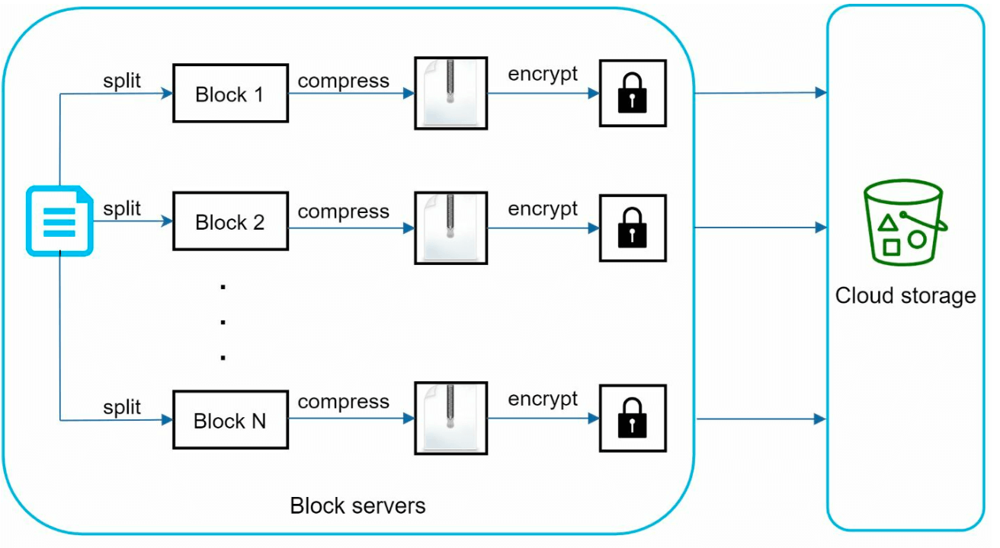
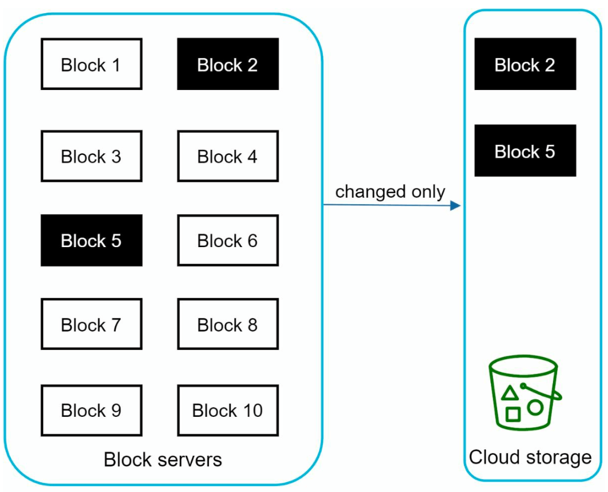
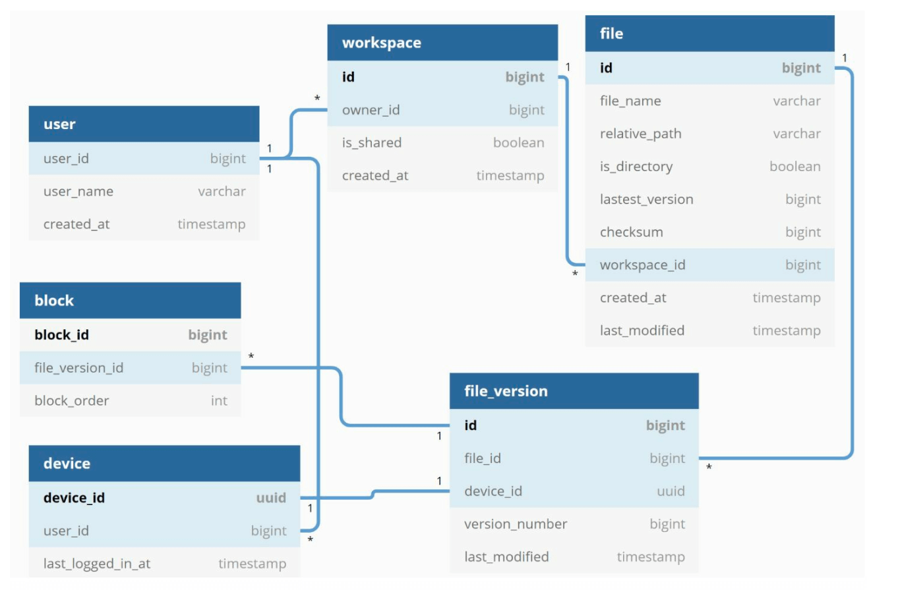
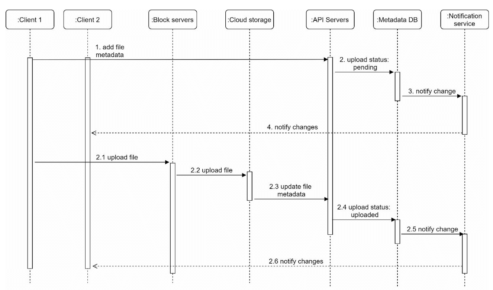
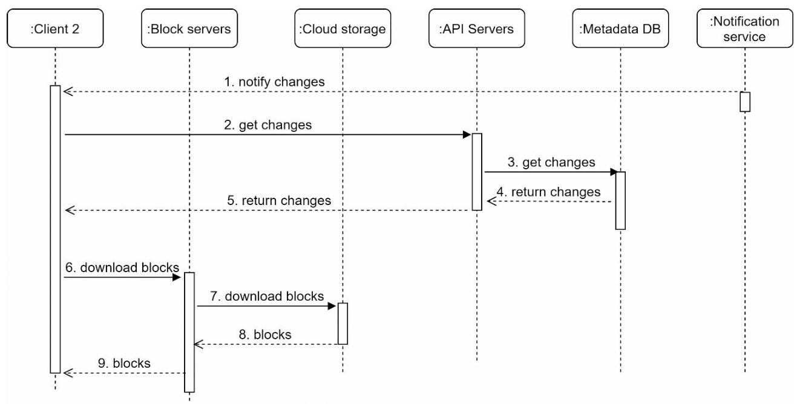

Design Google Drive
Files upload/download, multiple devices pe sync, sharing, revision history aur notifications — 10M DAU aur 500 PB storage ke saath. Block servers, delta sync, metadata DB aur conflict resolution ka poora design.
Introduction
Google Drive (ya Dropbox, OneDrive, iCloud) ek file storage + synchronization service hai — documents, photos, videos cloud pe rakho aur kisi bhi device se access karo, dosto/family/colleagues ke saath share karo. Is chapter ke features:
- File upload aur download
- Multiple devices pe file sync
- File sharing (permissions ke saath)
- File revision history
- File edit, delete ya share hone pe notifications
Google Docs jaisa collaborative real-time editing out of scope hai — wo alag problem (OT/CRDT) hai.
Step 1: Requirements
Functional
- Files add karo (drag-and-drop), download karo.
- Multiple devices pe sync.
- File revisions dekhna.
- Files share karna (permission ke saath).
- Edit/delete/share pe notification.
Non-functional
- Reliability: data loss bilkul unacceptable — storage system ka sabse important property.
- Fast sync: sync slow hua to user impatient hoke product chhod dega.
- Bandwidth efficiency: khaas kar mobile data pe — bekaar bytes mat bhejo.
- Scalability: 10M DAU.
- High availability: kuch servers down ho, network slow ho, phir bhi chale.
Back-of-the-envelope
| Assumption | Value |
|---|---|
| Signed-up users / DAU | 50M / 10M |
| Free space | 10 GB per user |
| Uploads | 2 files/day/user, avg 500 KB |
| Max file size | 10 GB |
| Read:write | 1:1 |
| Total space allocated | 50M × 10 GB = 500 PB |
| Upload QPS | 10M × 2 / 86,400 ≈ ~240; peak ≈ ~480 |
Step 2: High-level design
Single server se shuru
- Ek web server upload/download ke liye.
- Ek metadata database (MySQL jaisa) — user data, login info, files info.
- Ek storage directory —
drive/root.

drive root ke neeche collapsed folders user1, user2, user3 — har ek ek namespace. "expand" ke baad right: user1 ke andar recipes/ folder aur chicken_soup.txt; user2 ke andar football.mov, sports.txt; user3 ke andar best_pic_ever.png. Kisi bhi file ki unique identity = namespace + relative path.APIs
Teen basic APIs. Notes mein endpoints api.example.com pe hain — ye placeholder/example domain hai, asli Google API nahi; sirf API shape samjhane ke liye. (example.com domains documentation ke liye reserved hote hain, unpe koi real API nahi chalti.)
1. Upload a file
- Simple upload: file chhoti ho tab.
- Resumable upload: file badi ho aur network interruption ka chance ho.
Endpoint: https://api.example.com/files/upload?uploadType=resumable — resumable upload start karne ka example endpoint; uploadType=resumable query param server ko batata hai ki ye chunked/resumable session hoga.
POST https://api.example.com/files/upload?uploadType=resumable
Params:
uploadType = resumable
data = local file to upload
Resumable flow (3 steps):
1. Initial request bhejo → server ek "resumable URL" (session) lautata hai
2. Data upload karo aur upload state monitor karo
3. Upload disturb hua → usi resumable URL se jahan ruka tha wahan se resume2. Download a file
Endpoint: https://api.example.com/files/download — file download ka example endpoint; params mein file ka path dete hain.
GET https://api.example.com/files/download
Params:
path = download file path
Example: { "path": "/recipes/soup/best_soup.txt" }3. Get file revisions
Endpoint: https://api.example.com/files/list_revisions — kisi file ke purane versions ki list laane ka example endpoint; limit se kitne revisions chahiye wo control hota hai.
GET https://api.example.com/files/list_revisions
Params:
path = file path jiske revisions chahiye
limit = max kitne revisions return karein
Example: { "path": "/recipes/soup/best_soup.txt", "limit": 20 }Saare APIs ko user authentication aur HTTPS chahiye — SSL client-server data ko protect karta hai.
Single server se distributed system tak
Jaise files badhti hain, ek din disk full warning aati hai. Options:
- Sharding: storage ko multiple servers pe
user_idke basis pe baanto. Lekin ek server ka disk fail = us shard ke users ka data gaya. - Amazon S3: industry-leading scalability, availability, durability, security. Same-region aur cross-region replication.

Aur improvements:
- Load balancer: traffic distribute, web server fail ho to redirect.
- Web servers scale out.
- Metadata DB: SPOF hatane ke liye DB ko web server se bahar, replication + sharding.
- File storage: S3 with multi-region replication.
Sync conflicts
Bade storage system mein do users same file/folder ek saath modify karein — conflict. Strategy: jo version pehle process hua wo jeetega, baad wale ko conflict milega.

System User 2 ko dono copies dikhata hai — uski local copy aur server ka latest version. User 2 merge kar sakta hai ya ek version se dusre ko override.
Improved high-level design

- User: browser ya mobile app.
- Block servers: files ko blocks mein todke cloud storage pe upload. Block-level storage — har block ka unique hash value, metadata DB mein store. Blocks independent S3 objects; file reconstruct = blocks ko order mein join. Block ka max size 4 MB (Dropbox ka reference number).
- Cloud storage: blocks S3 pe.
- Cold storage: inactive files ke liye sasta storage.
- Load balancer + API servers: upload ke alawa sab — auth, profile, file metadata update.
- Metadata DB + cache: users, files, blocks, versions ka metadata. Files cloud mein, DB mein sirf metadata.
- Notification service: publisher/subscriber system — file add/edit/delete pe clients ko batata hai taaki wo latest changes pull karein.
- Offline backup queue: client offline hai to file changes ki info yahan, online aane pe sync.
Step 3: Design deep dive
Block servers: delta sync + compression
Badi files jo baar-baar update hoti hain — har update pe poori file bhejna bandwidth waste. Do optimizations:
- Delta sync: file modify ho to sabse sirf modified blocks sync karo, poori file nahi (sync algorithm se).
- Compression: file type ke hisaab se algorithm — text ke liye gzip/bzip2, images/videos ke liye alag.


High consistency requirement
System ko default strongly consistent hona chahiye — alag clients ek file ko alag dikha nahi sakte. Memory cache by default eventually consistent hota hai, to:
- Cache replicas aur master consistent rahein.
- DB write pe cache invalidate karo.
Isliye metadata ke liye relational DB — ACID natively support karta hai. NoSQL mein ACID default nahi milta, application logic mein banana padta.
Metadata database

- User: username, profile photo jaisi basic info.
- Device: device info;
push_idmobile push ke liye. Ek user ke multiple devices. - Namespace/workspace: user ki root directory.
- File: latest file se related sab.
- File_version: version history. Rows read-only rakho — revision history ki integrity bani rahe.
- Block: block info; file ka koi bhi version blocks ko sahi order mein join karke reconstruct.
Upload flow

- Add file metadata: client 1 naye file ka metadata bhejta hai → DB mein status
pending→ notification service client 2 ko batati hai. - Upload file content: client 1 block servers ko content bhejta hai → blocks chunk, compress, encrypt hoke cloud storage pe → upload complete hone pe cloud storage callback API servers ko → status
uploaded→ notification → client 2.
File edit hone pe bhi same flow.
Download flow
Download tab trigger hota hai jab kahin aur file add/edit hui. Client ko kaise pata chale?
- Client A online hai → notification service batati hai ki changes hain, pull karo.
- Client A offline hai → changes cache (offline backup queue) mein save; online aane pe latest changes pull.

Notification service
Do options the: long polling (Dropbox use karta hai) aur WebSocket. Yahan long polling choose kiya kyunki:
- Communication bidirectional nahi hai — server client ko change ki khabar deta hai, client kuch wapas push nahi karta.
- WebSocket real-time bidirectional (chat) ke liye best; Drive mein notifications kam frequent hain aur data burst nahi hota.
Har client notification server se long-poll connection rakhta hai; change detect hone pe connection close, client metadata server se latest changes laata hai, phir nayi long-poll request.
Storage space bachana
- De-duplicate blocks: account level pe redundant blocks hatao — do blocks identical hain agar unka hash same hai.
- Intelligent backup strategy:
- Limit: max kitne versions store karein — limit pe sabse purana version drop.
- Valuable versions only: baar-baar edit hone wali file ke har chhote edit ka version mat rakho; recent versions ko weight do. Experimentation se optimal number nikalo.
- Cold storage: mahino/saalon se untouched data ko Amazon S3 Glacier jaisi sasti storage mein.
Failure handling
| Failure | Handling |
|---|---|
| Load balancer | Secondary active ho jaata hai (heartbeats se monitoring) |
| Block server | Pending/unfinished jobs dusre servers ko |
| Cloud storage | S3 buckets multi-region replicated — dusre region se fetch |
| API server | Stateless — LB traffic dusre servers pe bhejta hai |
| Metadata cache | Replicated — dusre node se; failed node replace |
| Metadata DB master | Slave ko master promote, nayi slave node |
| Metadata DB slave | Reads dusre slave pe, failed replace |
| Notification service | Har online user ka long-poll connection hai; server down → saare clients reconnect karte hain dusre servers se. Ek server 1M+ connections rakh sakta hai, lekin itne saare reconnects ek saath slow hote hain — ye known pain point hai. |
| Offline backup queue | Replicated queues; ek fail → consumers re-subscribe backup queue ko |
Step 4: Wrap-up
Design ke do bade flows: file metadata manage karna aur file sync; notification service teesra. Ek alternate design: client seedha cloud storage pe upload kare (block servers bypass) — faster, lekin chunking/compression/encryption logic har platform (iOS, Android, web) pe alag implement karna padta, aur client-side encryption logic ko tamper kiya ja sakta hai. Isliye centralized block servers. Aur ek idea: presence service ko notification servers se alag nikaalna taaki dusri services bhi use karein.
Interview mein kaise bolein
- (5 min) Features + NFRs (reliability #1, fast sync, bandwidth). Estimation: 500 PB, ~240 upload QPS.
- (8 min) Single server + namespaces + 3 APIs (resumable upload), phir S3, LB, DB replication.
- (7 min) Improved diagram: block servers, cloud/cold storage, API servers, metadata DB/cache, notification service, offline queue.
- (15 min) Deep dive: 4 MB blocks + delta sync + compression + encryption, strong consistency → RDBMS, schema, upload/download sequence, long polling choice, sync conflicts.
- (5 min) Storage savings (dedup, versions, Glacier) + failure table.
Common follow-up questions
Q: Block size 4 MB hi kyun?
A: Chhote blocks = better dedup/delta, lekin metadata rows zyada; bade blocks = kam metadata, lekin small edit pe zyada re-upload. 4 MB practical balance hai (Dropbox reference).
Q: Do devices se same file ek saath edit hui?
A: First-processed wins; dusre ko conflict, dono copies dikhao — merge ya override user decide kare.
Q: Dedup encryption ke saath kaise?
A: Hash plaintext block pe (encryption se pehle) compute karke compare; account-level dedup mein ye safe hai kyunki same user ke blocks hain.
Q: Sharing kaise model karoge?
A: Workspace is_shared + ek ACL/permission table (user/group → file/folder → role). Notification service share event bhi bhejegi.
Q: WebSocket kyun nahi?
A: Traffic unidirectional aur infrequent hai; long polling simple aur kaafi hai.
Q: 10 GB ki file?
A: Resumable upload + parallel block upload; fail hone pe sirf missing blocks.
Key Takeaways
- Reliability (no data loss) #1 NFR; 500 PB storage, sirf ~240 upload QPS.
- APIs: simple + resumable upload, download, list_revisions (api.example.com sirf example domain hai).
- Files ko ≤4 MB blocks mein todo — compress + encrypt + hash; delta sync se sirf changed blocks.
- Metadata = relational DB (ACID, strong consistency), cache invalidation on write.
- Upload: metadata (pending) ∥ blocks → cloud callback → uploaded → notify. Download: notify → get changes → download blocks.
- Notification via long polling; offline clients ke liye offline backup queue.
- Storage bachao: hash-based dedup, version limits, cold storage (S3 Glacier); S3 cross-region replication for durability.